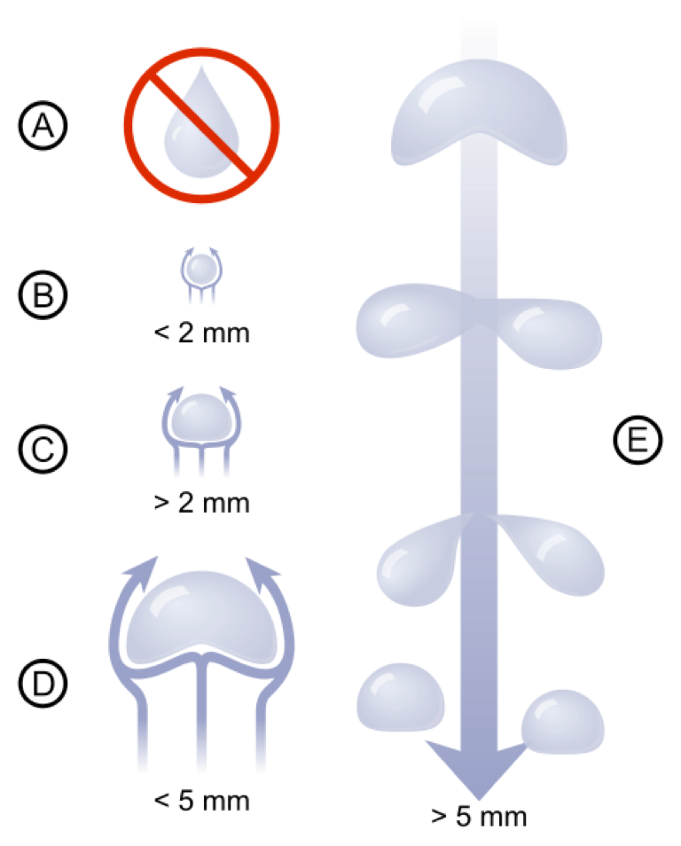

Rain characteristics: Drop Shapes
Vertical slices of raindrop
This module computes shapes of raindrops for two models.

Raindrop Radius, mm:
Vertical Slice of Raindrop
Vertical size, mm
Horizontal size, mm
Beard and Chuang model, 1987
Pruppacher-Pitter model, 1971
Note: Once selected, the right and left arrow-keys can be used to move the sliders.